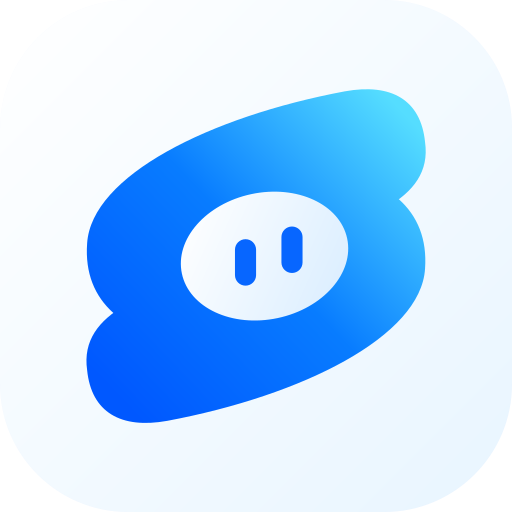

Let’s reconnect.
SOWT needs an internet connection to reach your workspace. Your saved conversations stay in your account.
Try againYou can also choose View → Reload SOWT.

SOWT needs an internet connection to reach your workspace. Your saved conversations stay in your account.
Try againYou can also choose View → Reload SOWT.